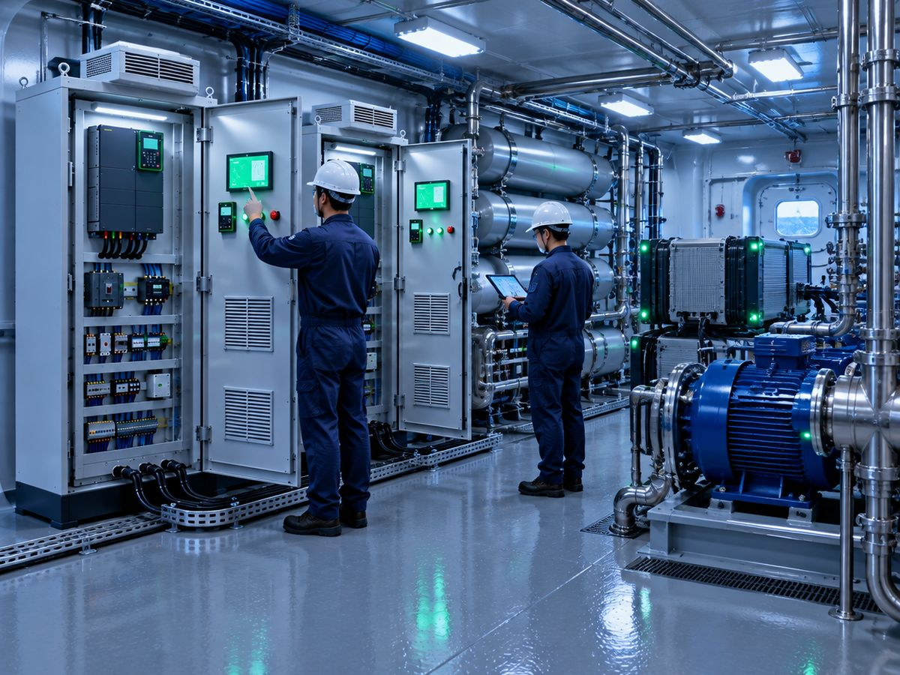

동인엔시스가 수소 인프라와 수소추진 선박의 안전성·효율을 높이는 제어·전력·안전 기술 특허 5건을 출원했습니다. 해양수산부 국가 연구개발사업 '안전기반 소형 수소추진선박 기술개발 및 실증' 과제를 수행하며 실증 환경에서 검증한 기술을 바탕으로 한 성과입니다.

주요 내용
- 적용 범위 — 수소충전소, 수소추진 선박, 친환경 에너지 설비 전반에 적용할 수 있는 기술로, 전력제어 로직·운전 안전성·에너지 효율 최적화·설비 보호 알고리즘이 핵심입니다.
- 데이터 기반 엔지니어링 — EOCR 기반 표준 제어반, 전력·운전 데이터 수집 구조, 분석·설계 피드백 체계를 단계적으로 구축하고 있습니다.
- 비즈니스모델 특허 — 운전 데이터로 설계 기준을 자동 고도화하고 유지관리·성능 최적화 서비스로 확장하는 데이터 순환형 사업 구조도 특허로 출원했습니다.
- 경영 체계 — ISO 45001(안전보건경영시스템) 인증과 벤처기업 인증을 완료했습니다.
동인엔시스 관계자는 "국가 연구개발과제로 검증한 기술을 특허로 체계화한 성과"라며 "제어 기술과 운전 데이터를 기반으로 수소 인프라와 친환경 선박 분야의 핵심 기술 기업으로 자리매김하겠다"고 밝혔습니다.
기사 원문: 에너지경제신문 (2025.12.26) — 동인엔시스, 수소 인프라·선박 제어 핵심기술 특허 5건 확보 →